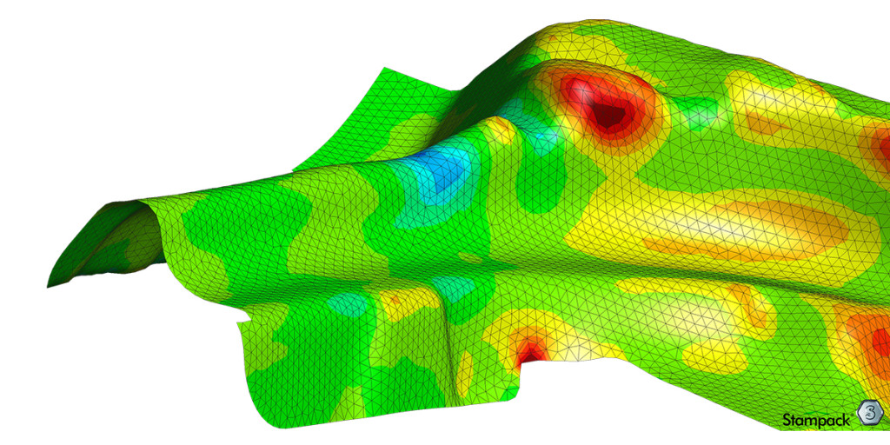
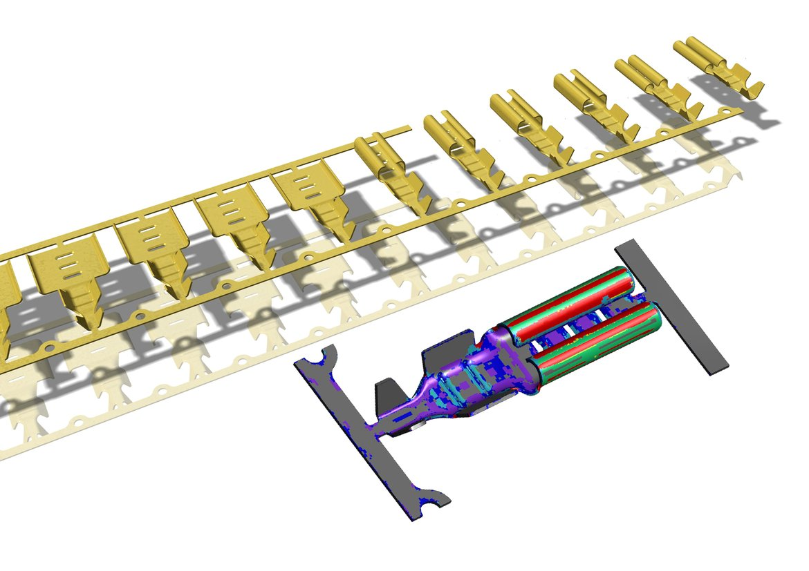
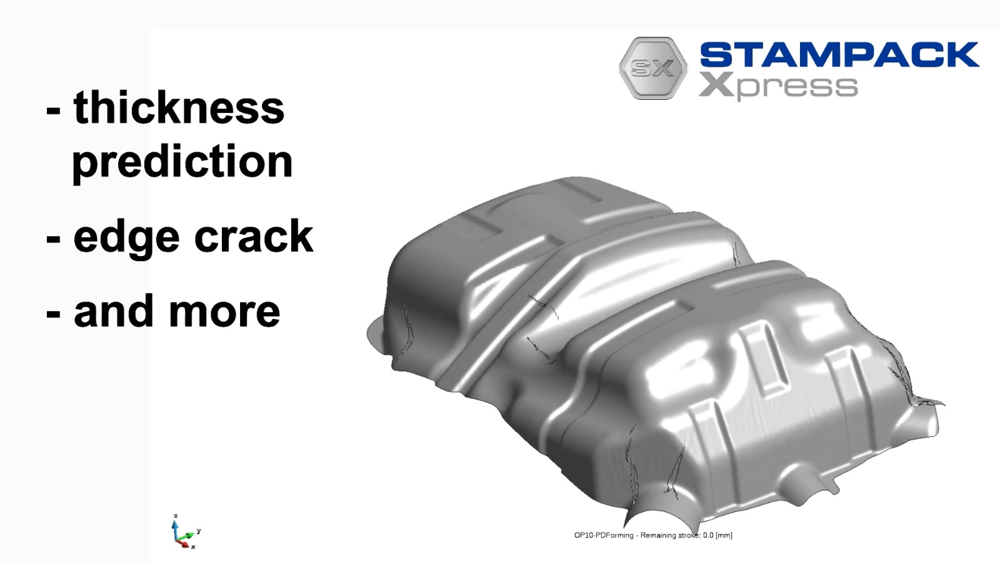

Virtual Try-Out for Tool Designers
Validate your sheet metal forming process virtually. Identify splits, wrinkles, and springback before you cut a single piece of steel.

Validate your sheet metal forming process virtually. Identify splits, wrinkles, and springback before you cut a single piece of steel.

Building the physical tool, testing it on the press, finding cracks, grinding the tool, and testing again. This is expensive and delays delivery.
Simulate the process in minutes. Stampack Xpress is designed for toolmakers, not scientists. No deep FEA knowledge is required to get accurate results.
Tailored solutions for every sheet metal thickness and process type.

Secure your process reliability and reduce scrap rates.

Reduce tool trial loops and deliver dies faster. Request a trial license today.
Request Trial License